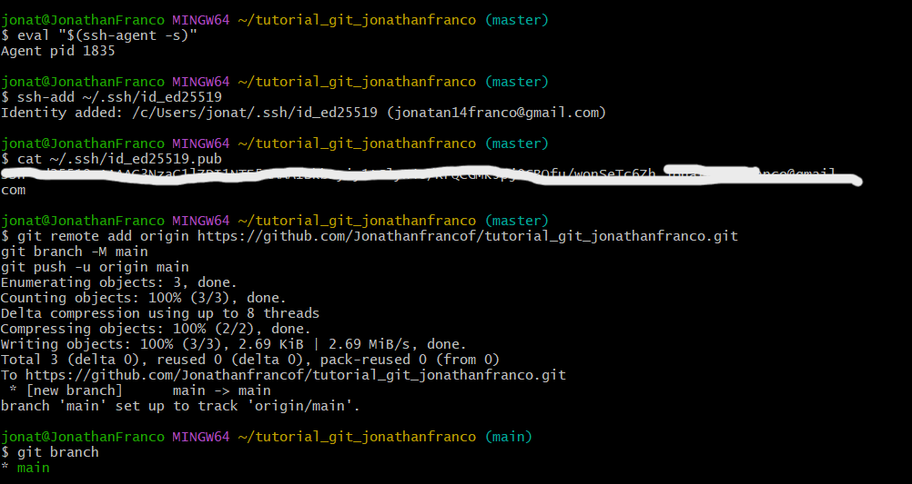

Biografía

Hola, soy Jonathan Franco, un apasionado del mundo de la tecnologia, soy estudiante de ingenieria de software y datos. A lo largo de mi vida, he explorado diversos intereses relacionados con este maravilloso mundo de la tecnologia, lo que ha impulsado mi enteres por esta rama. Este blog es mi espacio para compartir mis pensamientos y experiencias sobre temas que me importan. ¡Espero que disfrutes leyendo!
Blog
El asombroso mundo del hardware
Esta es la introducción a mi primera entrada de blog. Aquí hablaré sobre que es el harware y su importancia.
El hardware se refiere a todas las partes físicas y tangibles de una computadora o cualquier dispositivo electrónico. Es lo que puedes tocar y ver, como los componentes internos y externos del equipo. Si hablamos de componentes fisicos que integren una computadora, el hardware se podria representar con un pequeño abaco que se compone de distintas piezas las cuales en conjunto se utilizar para desarrollar una tarea.

El hardware es crucial en cualquier sistema informático porque proporciona la base física necesaria para ejecutar el software y procesar datos de manera eficiente. Su rendimiento, capacidad de almacenamiento y conectividad determinan la velocidad y funcionalidad del sistema, lo que impacta directamente en la productividad y seguridad de las operaciones diarias. Sin un hardware adecuado, el software no podría funcionar correctamente, limitando las capacidades del sistema.
El software
En esta publicación, discutiré otro tema interesante como lo es el software y su importancia.
El software es el conjunto de programas, aplicaciones y sistemas operativos que le dicen a una computadora cómo realizar tareas específicas. A diferencia del hardware, que es la parte física de un sistema, el software es intangible y se compone de código y datos que se ejecutan en el hardware. Ejemplos de software incluyen sistemas operativos como Windows o macOS, aplicaciones como Microsoft Word o Photoshop, y navegadores web como Google Chrome. El software es esencial porque permite que el hardware funcione y que los usuarios realicen una amplia variedad de actividades, desde escribir documentos hasta navegar por internet.

El software se podria entender como el conjunto de conocimientos que posee una persona para interpretar los resultados obtenidos en un abaco.
Turorial de git bash
¿Como utilizar git?
A continuación, explicaré un poco cómo utilizar Git Bash, una herramienta que nos permite interactuar con Git desde la línea de comandos. Git es una herramienta poderosa para el control de versiones que muchos programadores y desarrolladores utilizan para gestionar proyectos, desde los más pequeños hasta los más complejos. Si bien no soy un experto en Git, en este totorial quiero compartir lo que he descubierto para que podamos aprender juntos a usar esta útil herramienta.
¿Como iniciar un repositorio?
Para iniciar un repositorio usando git bash, lo primero que debes hacer es descargar el programa git, una vez decargado puedes proceder a ejecutarlo de esta forma ya puedes iniciar configurando git bash con tu nombre y correo electronico. Configurar Git Bash con tu nombre y correo electrónico es un paso importante porque Git utiliza esta información para registrar las actividades que realizas en el repositorio lo que te permite tener un historial de commits y colaborar con otras personas.
Configurando git bash
Para configurar estos datos utiliza este comando.

Creacion de nuestro repositorio
Para crear un repositorio en git puedes usar el comando mkdir + el nombre que le quieras dar a tu repositorio como te muestro en el ejemplo, una vez hecho esto puedes abrir tu editor de codigo en mi caso uso VS Code el cual inicio en la ultima linea con el comando code .

Para ver nuestros archivos desde la terminal de Git, debemos iniciar Git con el comando git init, como te muestro en el ejemplo. Posteriormente, se ejecutó el comando git branch, el cual normalmente muestra todas las ramas existentes en el repositorio. Dado que no se ha creado ninguna rama nueva, por defecto solo existe la rama principal llamada master.
Como podemos observar, aparece un archivo en rojo. Esto significa que aún no se encuentra en el área de preparación. Por tal motivo, debemos usar el comando git add *, que se utiliza en Git para añadir todos los archivos que se encuentran en el directorio actual al área de preparación, con el fin de poder trabajar en ellos.
Utiliza el comando git add * como te muestro en el ejemplo, esto agregara el archivo en la zona de trabajo, por ultimo no olvides de usar el comando git status para chekear el estado de este el cual debe aparecer en verde.
El comando git status El comando git status es una herramienta fundamental en Git que te permite obtener información sobre el estado actual del repositorio. un claro ejemplo de esto lo podemos aprecir en el ejemplo aterior, donde se actualizo el estado del archivo en cuestion.
Estableciendo coneccion entre Git bash y Github.
Establecer una conexión entre Git Bash y GitHub es esencial para facilitar la colaboración en proyectos de software. Permite a los desarrolladores trabajar en equipo, sincronizando cambios y manteniendo un respaldo en la nube de su código. Además, GitHub ofrece herramientas para gestionar versiones, revisar el historial de cambios y automatizar pruebas y despliegues. También proporciona una interfaz visual para entender mejor el código y documentar proyectos. En resumen, esta conexión maximiza la eficiencia y organización en el desarrollo de software.
Para establecer una coneccion entre git bash y github primero debemos generar unas llaves las cuales se encargaran de realizar la correcta encriptacion de nuestra coneccion para ello usaremios el comando ssh-keygen -t ed25519 -C +"nuestro correo electronico de github" de esta manera el programa nos arrojara una llave la cual necesitaremos darle a github como pudes observar en el ejemplo

Por ultimo usamos el comando cat ~/.ssh/ el cual lo ultilizamos para se utiliza para mostrar el contenido de archivos en el directorio oculto .ssh, que se encuentra en el directorio home del usuario. Este directorio suele contener claves SSH y configuraciones relacionadas con la autenticación en servidores remotos, de esta forma ya podremos empezar a trabajar desde github de una manera remota.
